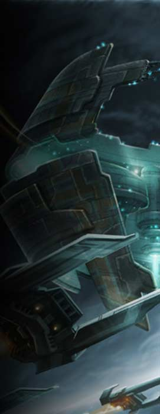
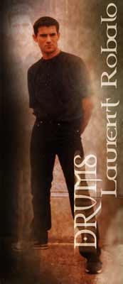

(dit "Larry Robs au sein du groupe ;-)
Né le 15 avril 1973 à Ris-Orangis
- sexe : rose / taille : 30 cm
- signe particulier : tache de naissance sur la joue droite.
- pacsé, 1 enfant reconnu, 25 non reconnus.
- monogame (hélas)
- fait ses débuts de "musicien" en 1988 (devant) derrière un synthé au sein du groupe "Système D" à Soisy/Seine.
- 1er concert le 21 juin 1989 à Evry devant 180 étudiants.
- Démantèlement de "Système D" la même année ce qui amena Larry Robs à intégrer un groupe rock-alternatif dès la fin 1989 où il commencera la batterie, formation dans laquelle Alex Bonv' fera ses débuts à son tour en 1991. Ce groupe se nommera "Warweek" et se produira de nombreuses fois en Ile de france dans des bars et pubs parfois plus que douteux... Malgré 2 ou 3 compos plutôt étranges, "Warweek" n'interprètera que des reprises du thrash au glam jusqu'au départ du guitariste Luc Julien et du bassiste Alexandre début 1995.
Axel Bonv' et Larry se retrouvant seuls, ces dernières décidèrent de fonder une nouvelle formation qui avait pour but de s'axer beaucoup plus vers le metal dit "speed-glam". Mais le niveau des 2 compères était alors insuffisant.
C'est à la fin 1995, à l'arrivée de Pascal au sein du groupe que "FalkirK" vit le jour. Une légende était née (non, je ne parle pas de Pascal :-)).
Puis arrivèrent Shred et Stephen en 1998. Le groupe était enfin au complet. La suite de cette histoire n'est qu'un ensemble de joies et de peines avec pour seul but : VENDRE AU MOINS 2 DISQUES !
____
(known as "Larry Robs" in the band :-)
Birth : April, the 15th 1973 in Ris-Orangis
- sex : pink / size : 30 cm
- particularity : birth blotch on the right cheek.
- lives with his girlfriend, 1 recognized child, 25 not :-)
-
- begins as a "musician" in 1998 as a keyboard palyer in a
band called "Systeme D" in Soisy/Seine.
- 1st show in Evry in Jube 1989 in front of 180 students.
- End of "System D", also in 1989, so LArry Robs begins to
play in an indie rock band as a drum player. Alex Bonv' joins him in
1991. This band was named "Warweek" and has performed many
shows near Paris in pubs and bars. The bands has already written 2 or
3 songs, but plays only covers from glam to thrash until the bass palyer
leaved, in 1995. Alex and Larry were then alone, and experimented their
new "speed-glam" era. But the 2 musicians' skill was stiil
to improve.
IN the fall of 1995, Pascal joined the band, which became "FalkirK".
A legend is born (I don't talk about Pascal :-)).
Then came Shred and Stephen in 1998. The line-up was complete. The following
is a mix of joys and pains with a single aim : WE WANT TO SELL 2 CDs
AT LEAST !

